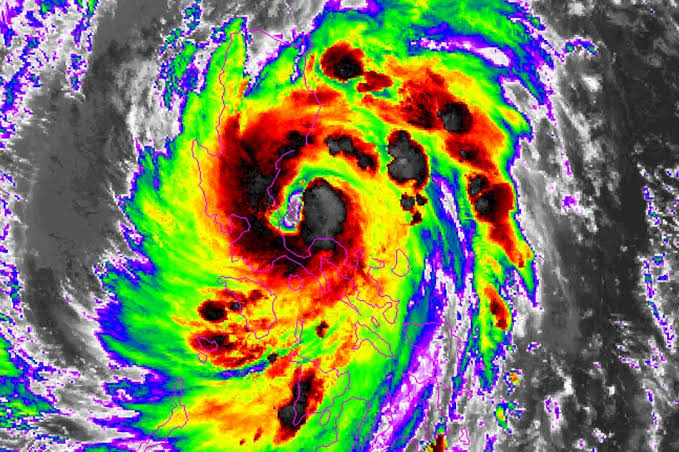
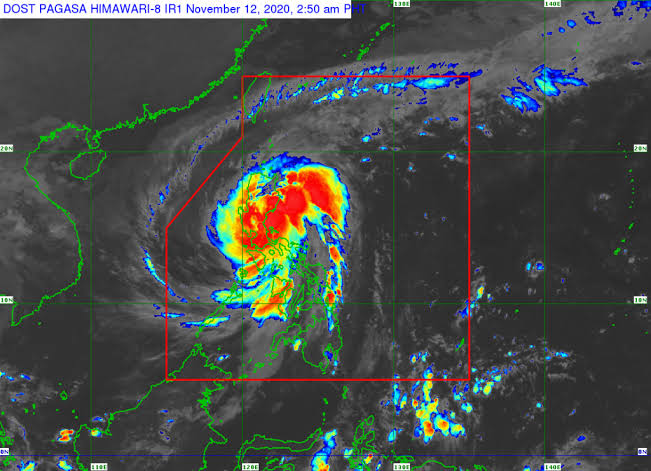
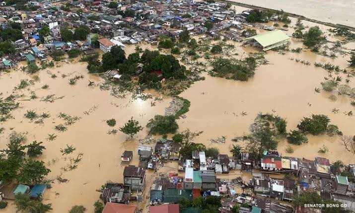
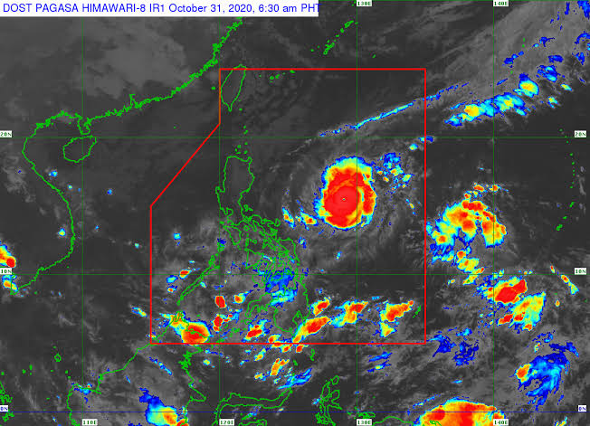
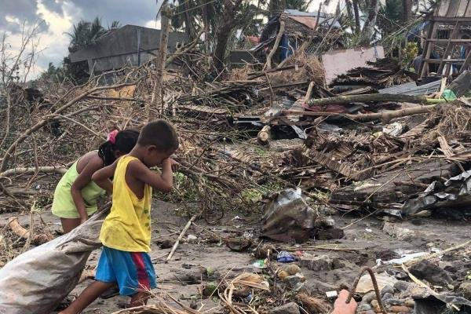

Philippines often experience typhoon a lot all year round, and according to PAGASA,the Philippines is prone to tropical cyclones due to its geographical location which generally produce heavy rains and flooding of large areas and also strong winds which result in heavy casualties to human life and destructions to crops and properties.
-Below you can see the typhoon that visited Philippines and its damages-

Philippines on the verge of destruction by Typhoon Ulysses

Philippines in a state of calamity

Philippines on the verge of destruction by Typhoon Rolly

Philippines in a state of calamity
References :https://www.google.com/search?client=lightning&ie=UTF-8&oe=UTF-8&q=typhoon+ulysses
https://www.google.com/search?q=typhoon+rolly&client=lightning&prmd=nimv&source=lnms&tbm=isch&sa=X&ved=2ahUKEwimgZCwnqTuAhUGc3AKHUQkCfMQ_AUoAnoECAwQAg&biw=360&bih=576&dpr=2